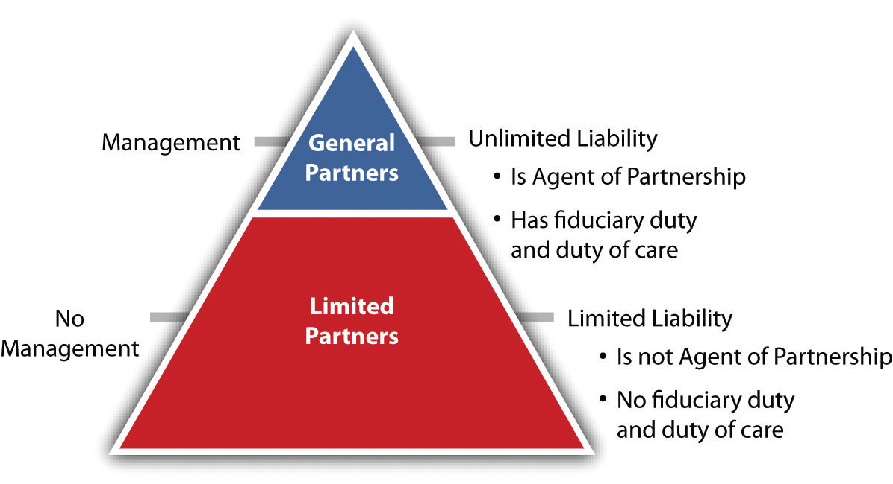

After reading this chapter, you should understand the following:
This chapter provides a bridge between the partnership and the corporate form. It explores several types of associations that are hybrid forms—that is, they share some aspects of partnerships and some of corporations. Corporations afford the inestimable benefit of limited liability, partnerships the inestimable benefit of limited taxation. Businesspeople always seek to limit their risk and their taxation.
At base, whether to allow businesspeople and investors to grasp the holy grail of limited liability is a political issue. When we say a person is “irresponsible,” it means he (or she, or it) does not take responsibility for his harmful actions; the loss is borne by others. Politically speaking, there is an incentive to allow businesspeople insulation from liability: it encourages them to take risks and invest, thus stimulating economic activity and forestalling unemployment. So the political trade-off with allowing various inventive forms of business organization is between providing business actors with the security that they will lose only their calculable investment, thus stimulating the economy, versus the “moral hazard” of allowing them to emerge mostly unscathed from their own harmful or foolish activities, thus externalizing resulting losses upon others. Some people feel that during the run-up to the “Great Recession” of 2007–09, the economic system allowed too much risk taking. When the risky investments collapsed, though, instead of forcing the risk takers to suffer loss, the government intervened—it “bailed them out,” as they say, putting the consequences of the failed risks on the taxpayer.
The risk-averseness and inventiveness of businesspeople is seemingly unlimited, as is investors’ urge to make profits through others’ efforts with as little risk as possible. The rationale for the invention of these hybrid business forms, then, is (1) risk reduction and (2) tax reduction. Here we take up the most common hybrid types first: limited partnerships and limited liability companies. Then we cover them in the approximate chronological order of their invention: sub-S corporations, limited liability partnerships, and limited liability limited partnerships. All these forms are entities.
Understand the following aspects of the limited partnership:
The limited partnership is attractive because of its treatment of taxation and its imposition of limited liability on its limited partners.
The original source of limited partnership law is the Uniform Limited Partnership Act (ULPA), which was drafted in 1916. A revised version, the Revised Uniform Limited Partnership Act (RULPA), was adopted by the National Conference of Commissioners on Uniform Laws in 1976 and further amended in 1985 and in 2001.
The 2001 act was
drafted for a world in which limited liability partnerships and limited liability companies can meet many of the needs formerly met by limited partnerships. This Act therefore targets two types of enterprises that seem largely beyond the scope of LLPs and LLCs: (i) sophisticated, manager-entrenched commercial deals whose participants commit for the long term, and (ii) estate planning arrangements (family limited partnerships). The Act accordingly assumes that, more often than not, people utilizing it will want (1) strong centralized management, strongly entrenched, and (2) passive investors with little control over or right to exit the entity. The Act’s rules, and particularly its default rules, have been designed to reflect these assumptions.“Uniform Limited Partnership Act (2001), Prefatory Note,” NCCUSL Archives, http://www.law.upenn.edu/bll/archives/ulc/ulpa/final2001.pdf.
All states except Louisiana adopted the 1976 or 1985 act—most opting for the 1985 version—and sixteen states have adopted the 2001 version. The acts may be properly referred to with a hyphen: “ULPA-1985,” or “ULPA-2001”; the word revised has been dropped. Here, we mainly discuss ULPA-1985. The Uniform Partnership Act (UPA) or the Revised Uniform Partnership Act (RUPA) also applies to limited partnerships except where it is inconsistent with the limited partnership statutes. The ULPA-2001 is not so much related to UPA or RUPA as previous versions were.
A limited partnershipA partnership formed by two or more persons under state law and having one or more general partners and one or more limited partners. (LP) is defined as “a partnership formed by two or more persons under the laws of a State and having one or more general partners and one or more limited partners.”ULPA, Section 102(11). The form tends to be attractive in business situations that focus on a single or limited-term project, such as making a movie or developing real estate; it is also widely used by private equity firms.
Unlike a general partnership, a limited partnership is created in accordance with the state statute authorizing it. There are two categories of partners: limited and general. The limited partners capitalize the business and the general partners run it.
The act requires that the firm’s promoters file a certificate of limited partnershipThe document filed with the appropriate state authority that, when approved, marks the legal existence of the limited partnership. with the secretary of state; if they do not, or if the certificate is substantially defective, a general partnership is created. The certificate must be signed by all general partners. It must include the name of the limited partnership (which must include the words limited partnership so the world knows there are owners of the firm who are not liable beyond their contribution) and the names and business addresses of the general partners. If there are any changes in the general partners, the certificate must be amended. The general partner may be, and often is, a corporation. Having a general partner be a corporation achieves the goal of limited liability for everyone, but it is somewhat of a “clunky” arrangement. That problem is obviated in the limited liability company, discussed in Section 24.2 "Limited Liability Companies". Here is an example of a limited partnership operating agreement: http://www.wyopa.com/Articles%20of%20limited%20partnership.htm.
Any natural person, partnership, limited partnership (domestic or foreign), trust, estate, association, or corporation may become a partner of a limited partnership.
The money to capitalize the business typically comes mostly from the limited partnersA member of a limited partnership who is not involved in running the firm but rather stands as a passive investor., who may themselves be partnerships or corporations. That is, the limited partners use the business as an investment device: they hope the managers of the firm (the general partners) will take their contributions and give them a positive return on it. The contributions may be money, services, or property, or promises to make such contributions in the future.
Control is not generally shared by both classes of partners.
The control of the limited partnership is in the hands of the general partners, which may—as noted—be partnerships or corporations.
Under ULPA-1985 and its predecessors, a limited partner who exercised any significant control would incur liability like a general partner as to third parties who believed she was one (the “control rule”). However, among the things a limited partner could do that would not risk the loss of insulation from personal liability were these “safe harbors”:
However, see Section 24.3.3 "Limited Liability Limited Partnerships" for how this “control rule” has been abolished under ULPA-2001.
General partners owe fiduciary duties to other general partners, the firm, and the limited partners; limited partners who do not exercise control do not owe fiduciary duties. See Figure 24.1 "The Limited Partnership under ULPA-1985".
Figure 24.1 The Limited Partnership under ULPA-1985
The partnership agreement may specify which general or limited partners have the right to vote on any matter, but if the agreement grants limited partners voting rights beyond the “safe harbor,” a court may abolish that partner’s limited liability.
Limited partnership interests may be assigned in whole or in part; if in whole, the assignor ceases to be a partner unless otherwise agreed. An assignment is usually made as security for a loan. The assignee becomes a new limited partner only if all the others consent or if provided for in the certificate; the assignment does not cause dissolution. The happy ease with which a limited partner can divest himself of the partnership interest makes the investment in the firm here more like that in a corporation than in a general partnership.
Limited partners have the right to inspect the firm’s books and records, they may own competing interests, they may be creditors of the firm, and they may bring derivative suits on the firm’s behalf. They may not withdraw their capital contribution if that would impair creditors’ rights.
Unless the partnership agreement provides otherwise (it usually does), the admission of additional limited partners requires the written consent of all. A general partner may withdraw at any time with written notice; if withdrawal is a violation of the agreement, the limited partnership has a right to claim of damages. A limited partner can withdraw any time after six months’ notice to each general partner, and the withdrawing partner is entitled to any distribution as per the agreement or, if none, to the fair value of the interest based on the right to share in distributions.
We noted in discussing partnerships that the partners are not entitled to “compensation,” that is, payment for their work; they are entitled to a share of the profits. For limited partnerships, the rule is a bit different.
Often, general partners are paid for their management work on a sliding scale, receiving a greater share of each dollar of cash flow as the limited partners’ cash distributions rise, thus giving the general partner an incentive to increase limited-partner distributions.
Profits or losses are shared as agreed in the certificate or, if there is no agreement, in accordance with the percentages of capital contributions made.
Liability is not shared.
The general partners are liable as in a general partnership, and they have the same fiduciary duty and duty of care as partners in a general partnership. However, see the discussion in Section 24.3.3 "Limited Liability Limited Partnerships" of the newest type of LP, the limited liability limited partnership (triple LP), where the general partner is also afforded limited liability under ULPA-2001.
The limited partners are only liable up to the amount of their capital contribution, provided the surname of the limited partner does not appear in the partnership name (unless his name is coincidentally the same as that of one of the general partners whose name does appear) and provided the limited partner does not participate in control of the firm. See Section 24.4.1 "Limited Partnerships: Limited Partners’ Liability for Managing Limited Partnership" for a case that highlights liability issues for partners.
We have been discussing ULPA-1985 here. But in a world of limited liability companies, limited liability partnerships, and limited liability limited partnerships, “the control rule has become an anachronism”; ULPA-2001 “provides a full, status-based liability shield for each limited partner, ‘even if the limited partner participates in the management and control of the limited partnership.’ULPA-2001, Section 303. The section thus eliminates the so-called control rule with respect to personal liability for entity obligations and brings limited partners into parity with LLC members, LLP partners and corporate shareholders.”Official Comment to Uniform Limited Partnership Act 2001, Section 303. And as will be noted in Section 24.3.3 "Limited Liability Limited Partnerships" under ULPA-2001 the general partner is also shielded from liability.
Assuming the limited partnership meets a minimum number of criteria related to limited liability, centralized management, duration, and transferability of ownership, it can enjoy the benefits of pass-through taxation; otherwise it will be taxed as a corporation. Pass-through (“conduit”) taxation is usually very important to partners.
The limited partnership’s termination involves the same three steps as in a general partnership: (1) dissolution, (2) winding up, and (3) termination.
Dissolution of a limited partnership is the first step toward termination (but termination does not necessarily follow dissolution). The limited partners have no power to dissolve the firm except on court order, and the death or bankruptcy of a limited partner does not dissolve the firm. The following events may cause dissolution: (1) termination of the partnership as per the certificate’s provisions; (2) termination upon an event specified in the partnership agreement; (3) the unanimous written consent of the partners; (4) the withdrawal of a general partner, unless at least one remains and the agreement says one is enough, or if within ninety days all partners agree to continue; (5) an event that causes the business to be illegal; and (6) judicial decree of dissolution when it is not reasonable to carry on. If the agreement has no term, its dissolution is not triggered by some agreed-to event, and none of the other things listed cause dissolution.
Dissolution requires the filing of a certificate of cancellation with the state if winding up commences.
General partners who have not wrongfully dissolved the partnership may wind it up, and so may the limited partners if all the general partners have wrongfully dissolved the firm. Any partner or that person’s legal representative can petition a court for winding up, with cause.
Upon winding up, the assets are distributed (1) to creditors, including creditor-partners, not including liabilities for distributions of profit; (2) to partners and ex-partners to pay off unpaid distributions; (3) to partners as return of capital contributions, unless otherwise agreed; and (4) to partners for partnership interests in proportion as they share in distributions, unless otherwise agreed. No distinction is made between general and limited partners—they share equally, unless otherwise agreed. When winding up is completed, the firm is terminated.
It is worth reiterating the part about “unless otherwise agreed”: people who form any kind of a business organization—partnership, a hybrid form, or corporations—can to a large extent choose to structure their relationship as they see fit. Any aspect of the company’s formation, operation, or ending that is not included in an agreement flops into the default provisions of the relevant law.
A limited partnership is a creature of statute: it requires filing a certificate with the state because it confers on some of its members the marvel of limited liability. It is an investment device composed of one or more general partners and one or more limited partners; limited partners may leave with six months’ notice and are entitled to an appropriate payout. The general partner is liable as a partner is a general partnership; the limited partners’ liability is limited to the loss of their investment, unless they exercise so much control of the firm as to become general partners. The general partner is paid, and the general and limited partners split profit as per the agreement or, if none, in the proportion as they made capital contributions. The firm is usually taxed like a general partnership: it is a conduit for the partners’ income. The firm is dissolved upon the end of its term, upon an event specified in the agreement, or in several other circumstances, but it may have indefinite existence.
The limited liability companyAn unincorporated organization of one or more persons or entities established in accordance with applicable state laws and whose members may actively participate in the organization without being personally liable for the debts, obligations, or liabilities of the organization. (LLC) gained sweeping popularity in the late twentieth century because it combines the best aspects of partnership and the best aspects of corporations: it allows all its owners (members) insulation from personal liability and pass-through (conduit) taxation. The first efforts to form LLCs were thwarted by IRS rulings that the business form was too much like a corporation to escape corporate tax complications. Tinkering by promoters of the LLC concept and flexibility by the IRS solved those problems in interesting and creative ways.
Corporations have six characteristics: (1) associates, (2) an objective to carry on a business and divide the gains, (3) continuity of life, (4) centralized management, (5) limited liability, and (6) free transferability of interests. Partnerships also, necessarily, have the first two corporate characteristics; under IRS rulings, if the LLC is not to be considered a corporation for tax purposes, it must lack at least one-half of the remaining four characteristics of a corporation: the LLC, then, must lack two of these corporate characteristics (otherwise it will be considered a corporation): (1) limited liability, (2) centralized management, (3) continuity of life, or (4) free transferability of interests. But limited liability is essential and centralized management is necessary for passive investors who don’t want to be involved in decision making, so pass-through taxation usually hinges on whether an LLC has continuity of life and free transferability of accounts. Thus it is extremely important that the LLC promoters avoid the corporate characteristics of continuity of life and free transferability of interests.
We will see how the LLC can finesse these issues.
All states have statutes allowing the creation of LLCs, and while a Uniform Limited Liability Company Act has been promulgated, only eight states have adopted it as of January 2011. That said, the LLC has become the entity of choice for many businesses.
An LLC is created according to the statute of the state in which it is formed. It is required that the LLC members file a “certificate of organization” with the secretary of state, and the name must indicate that it is a limited liability company. Partnerships and limited partnerships may convert to LLCs; the partners’ previous liability under the other organizational forms is not affected, but going forward, limited liability is provided. The members’ operating agreement spells out how the business will be run; it is subordinate to state and federal law. Unless otherwise agreed, the operating agreement can be amended only by unanimous vote. The LLC is an entity. Foreign LLCs must register with the secretary of state before doing business in a “foreign” state, or they cannot sue in state courts.
As compared with corporations, the LLC is not a good form if the owners expect to have multiple investors or to raise money from the public. The typical LLC has relatively few members (six or seven at most), all of whom usually are engaged in running the firm.
Most early LLC statutes, at least, prohibited their use by professionals. That is, practitioners who need professional licenses, such as certified public accountants, lawyers, doctors, architects, chiropractors, and the like, could not use this form because of concern about what would happen to the standards of practice if such people could avoid legitimate malpractice claims. For that reason, the limited liability partnership was invented.
Capitalization is like a partnership: members contribute capital to the firm according to their agreement. As in a partnership, the LLC property is not specific to any member, but each has a personal property interest in general. Contributions may be in the form of cash, property or services rendered, or a promise to render them in the future.
The LLC operating agreement may provide for either a member-managed LLC or a manager-managed (centralized) LLC. If the former, all members have actual and apparent authority to bind the LLC to contracts on its behalf, as in a partnership, and all members’ votes have equal weight unless otherwise agreed. Member-managers have duty of care and a fiduciary duty, though the parameters of those duties vary from state to state. If the firm is manager managed, only managers have authority to bind the firm; the managers have the duty of care and fiduciary duty, but the nonmanager members usually do not. Some states’ statutes provide that voting is based on the financial interests of the members. Most statutes provide that any extraordinary firm decisions be voted on by all members (e.g., amend the agreement, admit new members, sell all the assets prior to dissolution, merge with another entity). Members can make their own rules without the structural requirements (e.g., voting rights, notice, quorum, approval of major decisions) imposed under state corporate law.
If the firm has a centralized manager system, it gets a check in its “corporate-like” box, so it will need to make sure there are enough noncorporate-like attributes to make up for this one. If it looks too much like a corporation, it will be taxed like one.
One of the real benefits of the LLC as compared with the corporation is that no annual meetings are required, and no minutes need to be kept. Often, owners of small corporations ignore these formalities to their peril, but with the LLC there are no worries about such record keeping.
Distributions are allocated among members of an LLC according to the operating agreement; managing partners may be paid for their services. Absent an agreement, distributions are allocated among members in proportion to the values of contributions made by them or required to be made by them. Upon a member’s dissociation that does not cause dissolution, a dissociating member has the right to distribution as provided in the agreement, or—if no agreement—the right to receive the fair value of the member’s interest within a reasonable time after dissociation. No distributions are allowed if making them would cause the LLC to become insolvent.
The great accomplishment of the LLC is, again, to achieve limited liability for all its members: no general partner hangs out with liability exposure.
Members are not liable to third parties for contracts made by the firm or for torts committed in the scope of business (but of course a person is always liable for her own torts), regardless of the owner’s level of participation—unlike a limited partnership, where the general partner is liable. Third parties’ only recourse is as against the firm’s property. See Puleo v. Topel, (see Section 24.4.2 "Liability Issues in LLCs"), for an analysis of owner liability in an LLC.
Unless the operating agreement provides otherwise, members and managers of the LLC are generally not liable to the firm or its members except for acts or omissions constituting gross negligence, intentional misconduct, or knowing violations of the law. Members and managers, though, must account to the firm for any personal profit or benefit derived from activities not consented to by a majority of disinterested members or managers from the conduct of the firm’s business or member’s or managers use of firm property—which is the same as in partnership law.
Assuming the LLC is properly formed so that it is not too much like a corporation, it will—upon its members’ election—be treated like a partnership for tax purposes.
Termination, loosely speaking, refers either to how the entity’s life as a business ends (continuity of life) or to how a member’s interest in the firm ends—that is, how freely the interest is transferable.
The first step in the termination of the LLC is dissolution, though dissolution is not necessarily followed by termination.
The IRS has determined that continuity of life does not exist “if the death, insanity, bankruptcy, retirement, resignation, or expulsion of any member will cause a dissolution of the organization,”Treasury Regulation, § 301.7701-2(b)(1). and that if one of these events occurs, the entity may continue only with the members’ unanimous consent. Dissolution may occur even if the business is continued by the remaining members.
The typical LLC statute provides that an LLC will dissolve upon (1) expiration of the LLC’s term as per its agreement; (2) events specified in the agreement; (3) written consent of all members; (4) an “event of dissociation” of a member, unless within ninety days of the event all remaining members agree to continue, or the right to continue is stated in the LLC; (5) the entry of a judicial decree of dissolution; (6) a change in membership that results in there being fewer than two members; or (7) the expiration of two years after the effective date of administrative dissolution.
And an “event of dissociation” is typically defined as (1) a member’s voluntary withdrawal, (2) her assignment of the entire LLC interest, (3) her expulsion, (4) her bankruptcy, (5) her becoming incompetent, (6) dissolution of an entity member (as an LLC, limited partnership, or corporation), or (7) any other event specified in the agreement.
Thus under most statutes’ default position, if a member dies, becomes insane or bankrupt, retires, resigns, or is expelled, the LLC will dissolve unless within ninety days the rest of the members unanimously agree to continue. And by this means the firm does not have continuity of life. Some states provide opportunities for even more flexibility regarding the “unanimous” part. In the mid-1990s, the IRS issued revenue rulings (as opposed to regulations) that it would be enough if a “majority in interest” of remaining partners agreed to continue the business, and the “flexible” statute states adopted this possibility (the ones that did not are called “bulletproof” statutes). “Majority in interests” means a majority of profits and capital.
If the firm does dissolve, some states require public filings to that effect. If dissolution leads to winding up, things progress as in a general partnership: the business at hand is finished, accounts are rendered, bills paid, assets liquidated, and remaining assets are distributed to creditors (including member and manager creditors, but not for their shares in profits); to members and past members for unpaid distributions; to members for capital contributions; and to members as agreed or in proportion to contributions made. Upon dissolution, actual authority of members or managers terminates except as needed to wind up; members may have apparent authority, though, unless the third party had notice of the dissolution.
Again, the problem here is that if a member’s interest in the LLC is as freely transferable as a shareholder’s interest in a corporation (an owner can transfer all attributes of his interest without the others’ consent), the LLC will probably be said to have a check mark in the “corporate-like” box: too many of those and the firm will not be allowed pass-through taxation. Thus the trick for the LLC promoters is to limit free transferability enough to pass the test of not being a corporation, but not limit so much as to make it really difficult to divest oneself of the interest (then it’s not a very liquid or desirable investment).
Some states’ LLC statutes have as the default rule that the remaining members must unanimously consent to allow an assignee or a transferee of a membership interest to participate in managing the LLC. Since this prevents a member from transferring all attributes of the interest (the right to participate in management isn’t transferred or assigned), the LLC formed under the default provision will not have “free transferability of interest.” But if the LLC agreement allows majority consent for the transfer of all attributes, that also would satisfy the requirement that there not be free transferability of interests. Then we get into the question of how to define “majority”: by number of members or by value of their membership? And what if only the managing partners need to consent? Or if there are two classes of membership and the transfer of interests in one class requires the consent of the other? The point is that people keep pushing the boundaries to see how close their LLC can come to corporation-like status without being called a corporation.
Statutes for LLCs allow other business entities to convert to this form upon application.
The limited liability company has become the entity of choice for many businesspeople. It is created by state authority that, upon application, issues the “certificate of organization.” It is controlled either by managers or by members, it affords its members limited liability, and it is taxed like a partnership. But these happy results are obtained only if the firm lacks enough corporate attributes to escape being labeled as a corporation. To avoid too much “corporateness,” the firm’s certificate usually limits its continuity of life and the free transferability of interest. The ongoing game is to finesse these limits: to make them as nonconstraining as possible, to get right up to the line to preserve continuity, and to make the interest as freely transferable as possible.
The sub-S corporation or the S corporationA corporation whose owners elect to have it treated as a partnership for tax purposes. gets its name from the IRS Code, Chapter 1, Subchapter S. It was authorized by Congress in 1958 to help small corporations and to stem the economic and cultural influence of the relatively few, but increasingly powerful, huge multinational corporations. According to the website of an S corporation champion, “a half century later, S corporations are the most popular corporate structure in America. The IRS estimates that there were 4.5 million S corporation owners in the United States in 2007—about twice the number of C [standard] corporations.”“The History and Challenges of America’s Dominant Business Structure,” S Corp: Defending America’s Small and Family-Owned Businesses, http://www.s-corp.org/our-history.
The S corporation is a regular corporation created upon application to the appropriate secretary of state’s office and operated according to its bylaws and shareholders’ agreements. There are, however, some limits on how the business is set up, among them the following:
The owners of the S corporation have limited liability.
Taxation is the crux of the matter. The S corporation pays no corporate income tax (unless it has a lot of passive income). The S corporation’s shareholders include on their personal income statements, and pay tax on, their share of the corporation’s separately stated items of income, deduction, and loss. That is, the S corporation avoids the dreaded double taxation of corporate income.
S corporations’ shares can be bought or sold via share purchase agreements, and all changes in the ownership are reflected in the share ledger in the corporate minute book.
In 1991, Texas enacted the first limited liability partnershipA partnership in which some or all partners (depending on the jurisdiction) have limited liability. (LLP) statute, largely in response to the liability that had been imposed on partners in partnerships sued by government agencies in relation to massive savings and loan failures in the 1980s.Christine M. Przybysz, “Shielded Beyond State Limits: Examining Conflict-Of-Law Issues In Limited Liability Partnerships,” Case Western Reserve Law Review 54, no. 2 (2003): 605. (Here we see an example of the legislature allowing business owners to externalize the risks of business operation.) More broadly, the success of the limited liability company attracted the attention of professionals like accountants, lawyers, and doctors who sought insulation from personal liability for the mistakes or malpractice of their partners. Their wish was granted with the adoption in all states of statutes authorizing the creation of the limited liability partnership in the early 1990s. Most partnership law under the Revised Uniform Partnership Act applies to LLPs.
Members of a partnership (only a majority is required) who want to form an LLP must file with the secretary of state; the name of the firm must include “limited liability partnership” or “LLP” to notify the public that its members will not stand personally for the firm’s liabilities.
As noted, the purpose of the LLP form of business is to afford insulation from liability for its members. A typical statute provides as follows: “Any obligation of a partnership incurred while the partnership is a limited liability partnership, whether arising in contract, tort or otherwise, is solely the obligation of the partnership. A partner is not personally liable, directly or indirectly, by way of indemnification, contribution, assessment or otherwise, for such an obligation solely by reason of being or so acting as a partner.”Revised Code of Washington (RCW), Section 25.05.130.
However, the statutes vary. The early ones only allowed limited liability for negligent acts and retained unlimited liability for other acts, such as malpractice, misconduct, or wrongful acts by partners, employees, or agents. The second wave eliminated all these as grounds for unlimited liability, leaving only breaches of ordinary contract obligation. These two types of legislation are called partial shield statutes. The third wave of LLP legislation offered full shield protection—no unlimited liability at all. Needless to say, the full-shield type has been most popular and most widely adopted. Still, however, many statutes require specified amounts of professional malpractice insurance, and partners remain fully liable for their own negligence or for wrongful acts of those in the LLP whom they supervise.
In other respects, the LLP is like a partnership.
The progress toward achieving limited liability continues. A limited liability limited partnershipA limited partnership that has chosen to limit the liability of the general partnership under state law. (LLLP, or triple LP) is the latest invention. It is a limited partnership that has invoked the LLLP provisions of its state partnership law by filing with a specified public official the appropriate documentation to become an LLLP. This form completely eliminates the automatic personal liability of the general partner for partnership obligations and, under most statutes, also eliminates the “control rule” liability exposure for all limited partners. It is noteworthy that California law does not allow for an LLLP to be formed in California; however, it does recognize LLLPs formed in other states. A “foreign” LLLP doing business in California must register with the secretary of state. As of February 2011, twenty-one states allow the formation of LLLPs.
The 2001 revision of the Uniform Limited Partnership Act (ULPA) provides this definition of an LLLP: “‘Limited liability limited partnership’…means a limited partnership whose certificate of limited partnership states that the limited partnership is a limited liability limited partnership.” “Uniform Limited Partnership Act (2001),” NCCUSL Archives, http://www.law.upenn.edu/bll/archives/ulc/ulpa/final2001.htm; ULPA Section, 102(9). Section 404(c) gets to the point: “An obligation of a limited partnership incurred while the limited partnership is a limited liability limited partnership, whether arising in contract, tort, or otherwise, is solely the obligation of the limited partnership. A general partner is not personally liable, directly or indirectly, by way of contribution or otherwise, for such an obligation solely by reason of being or acting as a general partner. This subsection applies despite anything inconsistent in the partnership agreement that existed immediately before the consent required to become a limited liability limited partnership[.]”ULPA Section, 404(c).
In the discussion of limited partnerships, we noted that ULPA-2001 eliminates the “control rule” so that limited partners who exercise day-to-day control are not thereby liable as general partners. Now, in the section quoted in the previous paragraph, the general partner’s liability for partnership obligations is vaporized too. (Of course, the general partner is liable for its, his, or her own torts.) The preface to ULPA-2001 explains, “In a limited liability limited partnership (‘LLLP’), no partner—whether general or limited—is liable on account of partner status for the limited partnership’s obligations. Both general and limited partners benefit from a full, status-based liability shield that is equivalent to the shield enjoyed by corporate shareholders, LLC members, and partners in an LLP.”
Presumably, most existing limited partnerships will switch over to LLLPs. The ULPA-2001 provides that “the Act makes LLLP status available through a simple statement in the certificate of limited partnership.”
There was a reason that partnership law imposed personal liability on the partners: people tend to be more careful when they are personally liable for their own mistakes and bad judgment. Many government programs reflect peoples’ interest in adverting risk: federal deposit insurance, Social Security, and bankruptcy, to name three. And of course corporate limited liability has existed for two hundred years.See, for example, David A. Moss, “Risk, Responsibility, and the Role of Government,” Drake Law Review 56, no. 2 (2008): 541. Whether the movement to allow almost anybody the right to a business organization that affords limited liability will encourage entrepreneurship and business activity or whether it will usher in a new era of moral hazardThe lack of incentive to guard against a risk when a person is protected against it, as by being afforded limited liability.—people being allowed to escape the consequences of their own irresponsibility—is yet to be seen.
Businesspeople always prefer to reduce their risks. The partnership form imposes serious potential risk: unlimited personal liability. The corporate form eliminates that risk but imposes some onerous formalities and double taxation. Early on, then, the limited partnership form was born, but it still imposed unlimited liability on the general partner and on the limited partner if she became too actively involved. Congress was induced in the mid-1950s to allow certain small US corporations the right to single taxation, but the sub-S corporation still suffered from various limitations on its structure. In the 1980s, the limited liability company was invented; it has become the entity of choice for many businesspeople, but its availability for professionals was limited. In the late 1980s, the limited liability partnership form gained favor, and in the early 2000s, the limited liability limited partnership finished off unlimited liability for limited partnerships.
Frigidaire Sales Corp. v. Union Properties, Inc.
562 P.2d 244 (Wash. 1977)
Plaintiff [Frigidaire] entered into a contract with Commercial Investors (Commercial), a limited partnership. Defendants, Leonard Mannon and Raleigh Baxter, were limited partners of Commercial. Defendants were also officers, directors, and shareholders of Union Properties, Inc., the only general partner of Commercial. Defendants controlled Union Properties, and through their control of Union Properties they exercised the day-to-day control and management of Commercial. Commercial breached the contract, and Plaintiff brought suit against Union Properties and Defendants. The trial court concluded that Defendants did not incur general liability for Commercial’s obligations by reason of their control of Commercial, and the Court of Appeals affirmed.
[Plaintiff] does not contend that Defendants acted improperly by setting up the limited partnership with a corporation as the sole general partner. Limited partnerships are a statutory form of business organization, and parties creating a limited partnership must follow the statutory requirements. In Washington, parties may form a limited partnership with a corporation as the sole general partner. [Citations]
Plaintiff’s sole contention is that Defendants should incur general liability for the limited partnership’s obligations under RCW 25.08.070, because they exercised the day-to-day control and management of Commercial. Defendants, on the other hand, argue that Commercial was controlled by Union Properties, a separate legal entity, and not by Defendants in their individual capacities. [RCW 25.08.070 then read: “A limited partner shall not become liable as a general partner unless, in addition to the exercise of his rights and powers as limited partner, he takes part in the control of the business.”]
…The pattern of operation of Union Properties was to investigate and conceive of real estate investment opportunities and, when it found such opportunities, to cause the creation of limited partnerships with Union Properties acting as the general partner. Commercial was only one of several limited partnerships so conceived and created. Defendants did not form Union Properties for the sole purpose of operating Commercial. Hence, their acts on behalf of Union Properties were not performed merely for the benefit of Commercial.…
[P]etitioner was never led to believe that Defendants were acting in any capacity other than in their corporate capacities. The parties stipulated at the trial that Defendants never acted in any direct, personal capacity. When the shareholders of a corporation, who are also the corporation’s officers and directors, conscientiously keep the affairs of the corporation separate from their personal affairs, and no fraud or manifest injustice is perpetrated upon third persons who deal with the corporation, the corporation’s separate entity should be respected. [Citations]
For us to find that Defendants incurred general liability for the limited partnership’s obligations under RCW 25.08.070 would require us to apply a literal interpretation of the statute and totally ignore the corporate entity of Union Properties, when Plaintiff knew it was dealing with that corporate entity. There can be no doubt that Defendants, in fact, controlled the corporation. However, they did so only in their capacities as agents for their principal, the corporate general partner. Although the corporation was a separate entity, it could act only through its board of directors, officers, and agents. [Citations] Plaintiff entered into the contract with Commercial. Defendants signed the contract in their capacities as president and secretary-treasurer of Union Properties, the general partner of Commercial. In the eyes of the law it was Union Properties, as a separate corporate entity, which entered into the contract with Plaintiff and controlled the limited partnership.
Further, because Defendants scrupulously separated their actions on behalf of the corporation from their personal actions, Plaintiff never mistakenly assumed that Defendants were general partners with general liability. [Citations] Plaintiff knew Union Properties was the sole general partner and did not rely on Defendants’ control by assuming that they were also general partners. If Plaintiff had not wished to rely on the solvency of Union Properties as the only general partner, it could have insisted that Defendants personally guarantee contractual performance. Because Plaintiff entered into the contract knowing that Union Properties was the only party with general liability, and because in the eyes of the law it was Union Properties, a separate entity, which controlled the limited partnership, there is no reason for us to find that Defendants incurred general liability for their acts done as officers of the corporate general partner.
The decision of the Court of Appeals is affirmed.
Puleo v. Topel
856 N.E.2d 1152 (Ill. App. 2006)
Plaintiffs Philip Puleo [and others]…appeal the order of the circuit court dismissing their claims against defendant Michael Topel.
The record shows that effective May 30, 2002, Thinktank, a limited liability company (LLC) primarily involved in web design and web marketing, was involuntarily dissolved by the Illinois Secretary of State…due to Thinktank’s failure to file its 2001 annual report as required by the Illinois Limited Liability Company Act (the Act) [Citation].
[In December 2002], plaintiffs, independent contractors hired by Topel, filed a complaint against Topel and Thinktank in which they alleged breach of contract, unjust enrichment, and claims under the account stated theory. Those claims stemmed from plaintiffs’ contention that Topel, who plaintiffs alleged was the sole manager and owner of Thinktank, knew or should have known of Thinktank’s involuntary dissolution, but nonetheless continued to conduct business as Thinktank from May 30, 2002, through the end of August 2002. They further contended that on or about August 30, 2002, Topel informed Thinktank employees and independent contractors, including plaintiffs, that the company was ceasing operations and that their services were no longer needed. Thinktank then failed to pay plaintiffs for work they had performed.…
On September 2, 2003, the circuit granted plaintiffs’ motion for judgment on the pleadings against Thinktank. Thereafter, on October 16, 2003, plaintiffs filed a separate motion for summary judgment against Topel [personally]. Relying on [Citation], plaintiffs contended that Topel, as a principal of Thinktank, an LLC, had a legal status similar to a shareholder or director of a corporation, who courts have found liable for a dissolved corporation’s debts. Thus, plaintiffs argued that Topel was personally liable for Thinktank’s debts.…
…The circuit court denied plaintiffs’ motion for summary judgment against Topel.…In doing so, the circuit court acknowledged that Topel continued to do business as Thinktank after its dissolution and that the contractual obligations at issue were incurred after the dissolution.
However…the court entered a final order dismissing all of plaintiffs’ claims against Topel with prejudice.…The court stated in pertinent part:
Based upon the Court’s…finding that the Illinois Legislature did not intend to hold a member of a Limited Liability Company liable for debts incurred after the Limited Liability Company had been involuntarily dissolved, the Court finds that all of Plaintiffs’ claims against Defendant Topel within the Complaint fail as a matter of law, as they are premised upon Defendant Topel’s alleged personal liability for obligations incurred in the name of Thinktank LLC after it had been involuntarily dissolved by the Illinois Secretary of State.
Plaintiffs now appeal that order…[contending] that…the circuit court erred in dismissing their claims against Topel. In making that argument, plaintiffs acknowledge that the issue as to whether a member or manager of an LLC may be held personally liable for obligations incurred by an involuntarily dissolved LLC appears to be one of first impression under the Act. That said, plaintiffs assert that it has long been the law in Illinois that an officer or director of a dissolved corporation has no authority to exercise corporate powers and thus is personally liable for any debts he incurs on behalf of the corporation after its dissolution. [Citations] Plaintiffs reason that Topel, as managing member of Thinktank, similarly should be held liable for debts the company incurred after its dissolution.
We first look to the provisions of the Act as they provided the trial court its basis for its ruling.…
(a) Except as otherwise provided in subsection (d) of this Section, the debts, obligations, and liabilities of a limited liability company, whether arising in contract, tort, or otherwise, are solely the debts, obligations, and liabilities of the company. A member or manager is not personally liable for a debt, obligation, or liability of the company solely by reason of being or acting as a member or manager.…
(c) The failure of a limited liability company to observe the usual company formalities or requirements relating to the exercise of its company powers or management of its business is not a ground for imposing personal liability on the members or managers for liabilities of the company.
(d) All or specified members of a limited liability company are liable in their capacity as members for all or specified debts, obligations, or liabilities of the company if:
(1) a provision to that effect is contained in the articles of organization; and
(2) a member so liable has consented in writing to the adoption of the provision or to be bound by the provision.
[Another relevant section provides]:
(a) A limited liability company is bound by a member or manager’s act after dissolution that:
(1) is appropriate for winding up the company’s business; or
(2) would have bound the company before dissolution, if the other party to the transaction did not have notice of the dissolution.
(b) A member or manager who, with knowledge of the dissolution, subjects a limited liability company to liability by an act that is not appropriate for winding up the company’s business is liable to the company for any damage caused to the company arising from the liability.
[The statute] clearly indicates that a member or manager of an LLC is not personally liable for debts the company incurs unless each of the provisions in subsection (d) is met. In this case, plaintiffs cannot establish either of the provisions in subsection (d). They have not provided this court with Thinktank’s articles of organization, much less a provision establishing Topel’s personal liability, nor have they provided this court with Topel’s written adoption of such a provision. As such, under the express language of the Act, plaintiffs cannot establish Topel’s personal liability for debts that Thinktank incurred after its dissolution.…
In 1998…the legislature amended [the LLC statute]…and in doing so removed…language which explicitly provided that a member or manager of an LLC could be held personally liable for his or her own actions or for the actions of the LLC to the same extent as a shareholder or director of a corporation could be held personally liable [which would include post-dissolution acts undertaken without authority]. As we have not found any legislative commentary regarding that amendment, we presume that by removing the noted statutory language, the legislature meant to shield a member or manager of an LLC from personal liability. [Citation] “When a statute is amended, it is presumed that the legislature intended to change the law as it formerly existed.”
Nonetheless, plaintiffs ask this court to disregard the 1998 amendment and to imply a provision into the Act similar to…the Business Corporation Act. We cannot do so.…When the legislature amended section [the relevant section] it clearly removed the provision that allowed a member or manager of an LLC to be held personally liable in the same manner as provided in section 3.20 of the Business Corporation Act. Thus, the Act does not provide for a member or manager’s personal liability to a third party for an LLC’s debts and liabilities, and no rule of construction authorizes this court to declare that the legislature did not mean what the plain language of the statute imports.
We, therefore, find that the circuit court did not err in concluding that the Act did not permit it to find Topel personally liable to plaintiffs for Thinktank’s debts and liabilities. We agree with plaintiff that the circuit court’s ruling does not provide an equitable result. However, the circuit court, like this court, was bound by the statutory language.
Accordingly, we affirm the judgment of the circuit court of Cook County.
Campbell v. Lichtenfels
2007 WL 447919 (Conn. Super. 2007)
This case concerns the aftermath of the dissolution of the parties’ law practice. Following a hearing on January 2 and 3, 2007, this court issued a memorandum of decision on January 5, 2007 granting the plaintiff a prejudgment remedy in the amount of $15,782.01. The plaintiff has now moved for reargument, contending that the court improperly considered as a setoff one-half of a malpractice settlement paid personally by the defendant, which sum the court found to be a debt of a partnership. [The defendant was sued for malpractice by a third party; he paid the entire claim personally and when the law firm dissolved, the plaintiff’s share from the liquidated assets was reduced by one-half to account for the amount the defendant had paid.]
In support of his motion to reargue, the plaintiff relies on General Statutes Sec. 34-427(c) and, in that motion, italicizes those portions which he believes apply to his request for reargument. That section states (with emphasis as supplied in the plaintiff’s motion) that:
a partner in a registered limited liability partnership is not liable directly or indirectly, including by way of indemnification, contribution or otherwise, for any debts, obligations and liabilities of or chargeable to the partnership or another partner or partners, whether arising in contract, tort, or otherwise, arising in the course of the partnership business while the partnership is a registered limited liability partnership. (emphasis in original)
While italicizing the phases that appear to suit his purposes, the plaintiff completely ignores the most important phrase: “a partner in a registered limited liability partnership.” At the hearing, neither party presented any evidence at the hearing that tended to prove that the nature of the business relationship between the parties was that of a “registered limited liability partnership.” To the contrary, the testimony presented at the hearing revealed that the parties had a general partnership in which they had orally agreed to share profits and losses equally and that they never signed a partnership agreement. There was certainly no testimony or tangible evidence to the effect that the partnership had filed “a certificate of limited liability partnership with the Secretary of the State, stating the name of the partnership, which shall conform to the requirements of [the statute]; the address of its principal office;…a brief statement of the business in which the partnership engages; any other matters the partnership may determine to include; and that the partnership therefore applies for status as a registered limited liability partnership.” [Citation]
It is true that certain of the exhibits, such as copies of checks and letters written on the law firm letterhead, refer to the firm as “Campbell and Lichtenfels, LLP.” These exhibits, however, were not offered for the purpose of establishing the partnership’s character, and merely putting the initials “LLP” on checks and letterhead is not, in and of itself, proof of having met the statutory requirements for registration as a limited liability partnership. The key to establishing entitlement to the protections offered by [the limited liability partnership statute] is proof that the partnership has filed “a certificate of limited liability partnership with the Secretary of the State,” and the plaintiff presented no such evidence to the court.
Because the evidence presented at the hearing does not support a claim that the nature of the relationship between the parties to this case was that of partners in a registered limited liability partnership, the provisions of [the limited liability partnership statute] do not apply. Rather, this partnership is governed by the provisions of [the Uniform Partnership Act] which states: “Except as otherwise provided…all partners are liable jointly and severally for all obligations of the partnership unless otherwise agreed by the claimant or provided by law.” Because there has been no evidence that this partnership falls within [any exceptions] the court finds Campbell and Lichtenfels to have been a general partnership in which the plaintiff shares the liability for the malpractice claim, even if he was not the partner responsible for the alleged negligence that led to that claim.
The plaintiff correctly points out that reargument is appropriate when the court has “overlooked” a “…principle of law which would have a controlling effect…” on the outcome of the case at hand. [Citation] The principle of law now raised by the plaintiff was “overlooked” by the court at the time of the hearing for two good reasons. First, it was not brought to the court’s attention at the time of the hearing. Second, and more importantly, the plaintiff presented no evidence that would have supported the claim that the principle of law in question, namely the provisions of [the limited liability partnership] was applicable to the facts of this case. Because the provisions of [that statute] are inapplicable, they are quite obviously not “controlling.” The principle of law which does control this issue is found in [general partnership law] and that principle makes the plaintiff liable for his share of the malpractice settlement, as the court has previously found. The motion for reargument is therefore denied.
Between partnerships and corporations lie a variety of hybrid business forms: limited partnerships, sub-S corporations, limited liability companies, limited liability partnerships, and limited liability limited partnerships. These business forms were invented to achieve, as much as possible, the corporate benefits of limited liability, centralized control, and easy transfer of ownership interest with the tax treatment of a partnership.
Limited partnerships were recognized in the early twentieth century and today are governed mostly by the Uniform Limited Partnership Act (ULPA-1985 or ULPA-2001). These entities, not subject to double taxation, are composed of one or more general partners and one or more limited partners. The general partner controls the firm and is liable like a partner in a general partnership (except under ULPA-2001 liability is limited); the limited partners are investors and have little say in the daily operations of the firm. If they get too involved, they lose their status as limited partners (except this is not so under ULPA-2001). The general partner, though, can be a corporation, which finesses the liability problem. A limited partnership comes into existence only when a certificate of limited partnership is filed with the state.
In the mid-twentieth century, Congress was importuned to allow small corporations the benefit of pass-through taxation. It created the sub-S corporation (referring to a section of the IRS code). It affords the benefits of taxation like a partnership and limited liability for its members, but there are several inconvenient limitations on how sub-S corporations can be set up and operate.
The 1990s saw the limited liability company become the entity of choice for many businesspeople. It deftly combines limited liability for all owners—managers and nonmanagers—with pass-through taxation and has none of the restrictions perceived to hobble the sub-S corporate form. Careful crafting of the firm’s bylaws and operating certificate allow it to combine the best of all possible business forms. There remained, though, one fly in the ointment: most states did not allow professionals to form limited liability companies (LLCs).
This last barrier was hurtled with the development of the limited liability partnership. This form, though mostly governed by partnership law, eschews the vicarious liability of nonacting partners for another’s torts, malpractice, or partnership breaches of contract. The extent to which such exoneration from liability presents a moral hazard—allowing bad actors to escape their just liability—is a matter of concern.
Having polished off liability for all owners with the LLC and the LLP, the next logical step occurred when eyes returned to the venerable limited partnership. The invention of the limited liability limited partnership in ULPA-2001 not only abolished the “control test” that made limited partners liable if they got too involved in the firm’s operations but also eliminated the general partner’s liability.
Table 24.1 Comparison of Business Organization Forms
| Type of Business Form | Formation and Ownership Rules | Funding | Management | Liability | Taxes | Dissolution |
|---|---|---|---|---|---|---|
| Limited partnership | Formal filing of articles of partnership; unlimited number of general and limited partners | General and limited partners contribute capital | General partner | General partner personally liable; limited partners to extent of contributionUnder ULPA-2001, the general partner has limited liability. | Flow-through as in partnership | Death or termination of general partner, unless otherwise agreed |
| S corporation | Formal filing of articles of incorporation; up to 100 shareholders allowed but only one class of stock | Equity (sell stock) or debt funding (issue bonds); members share profits and losses | Board of directors, officers | Owners not personally liable absent piercing corporate veil (see Chapter 25 "Corporation: General Characteristics and Formation") | Flow-through as in partnership | Only if limited duration or shareholders vote to dissolve |
| Limited liability company | Formal filing of articles of organization; unlimited “members” | Members make capital contributions, share profits and losses | Member managed or manager managed | Limited liability | Flow-through as in partnership. | Upon death or bankruptcy, unless otherwise agreed |
| Limited liability partnership (LLP) | Formal filing of articles of LLP | Members make capital contributions, share profits and losses | All partners or delegated to managing partner | Varies, but liability is generally on partnership; nonacting partners have limited liability | Flow-through as in partnership | Upon death or bankruptcy, unless otherwise agreed |
| Limited liability limited partnership (LLLP) | Formal filing of articles of LLP; choosing LLLP form | Same as above | Same as above | Liability on general partner abolished: all members have limited liability | Flow-through as in partnership | Same as above |
Peron and Quinn formed P and Q Limited Partnership. Peron made a capital contribution of $20,000 and became a general partner. Quinn made a capital contribution of $10,000 and became a limited partner. At the end of the first year of operation, a third party sued the partnership and both partners in a tort action. What is the potential liability of Peron and Quinn, respectively?
A limited partnership
Puentes is a limited partner of ABC, LP. He paid $30,000 for his interest and he also loaned the firm $20,000. The firm failed. Upon dissolution and liquidation,
Reference to “moral hazard” in conjunction with hybrid business forms gets to what concern?
One of the advantages to the LLC form over the sub-S form is